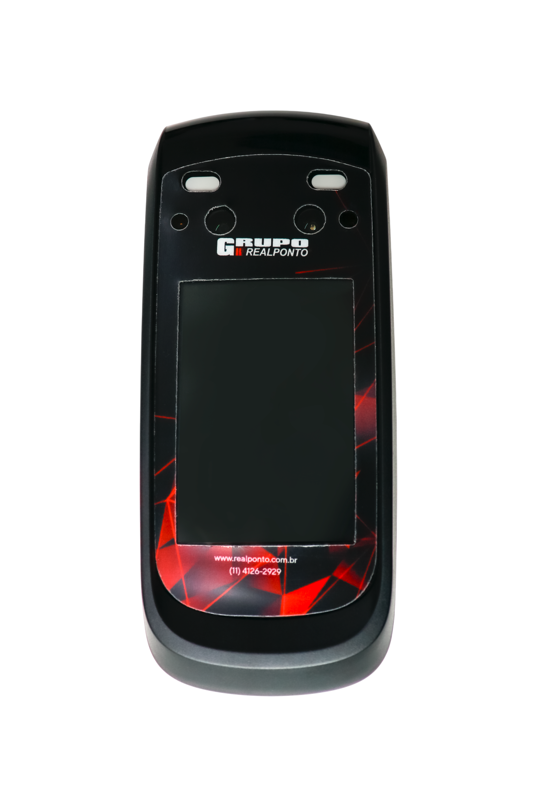

Menor investimento inicial
Preserve o caixa da empresa evitando concentrar recursos na compra dos equipamentos.


A locação permite utilizar equipamentos modernos de controle de ponto e acesso com uma mensalidade previsível, suporte técnico e manutenção durante a vigência do serviço, conforme as condições contratadas.
A locação reduz a necessidade de comprar o equipamento no início do projeto e concentra equipamento e serviços em uma solução contratada.
Preserve o caixa da empresa evitando concentrar recursos na compra dos equipamentos.
O atendimento de manutenção pode fazer parte da solução contratada, reduzindo despesas inesperadas com reparos.
Sua empresa conta com uma equipe preparada para auxiliar nas situações relacionadas aos equipamentos e à operação.
Uma mensalidade definida facilita o planejamento financeiro e reduz a exposição a despesas pontuais de manutenção.
Conforme as condições contratadas, situações de falha podem contar com reparo ou substituição para reduzir o período de indisponibilidade.
A solução é dimensionada considerando usuários, locais, formas de identificação e necessidades da empresa.
Em vez de concentrar recursos na compra dos equipamentos, sua empresa pode contratar uma solução de locação adequada à operação e transformar parte desse investimento em uma despesa mensal planejada.
A modalidade pode ser utilizada para relógios de ponto e equipamentos de controle de acesso, dependendo do projeto. Durante o contrato, a RealPonto acompanha a solução com atendimento técnico e manutenção conforme o escopo contratado.
A locação é especialmente interessante para empresas que buscam previsibilidade, menor desembolso inicial e uma estrutura técnica preparada para apoiar a continuidade da operação.
 Relógios de ponto
Relógios de ponto

Controle facial Controle de acesso
Controle de acesso
Cada operação possui necessidades diferentes. Por isso, a solução de locação também pode receber recursos opcionais, permitindo personalizar o equipamento de acordo com a estrutura da empresa. É possível adicionar módulo de comunicação para ampliar as possibilidades de conectividade e fonte com bateria para manter o equipamento funcionando mesmo em situações de falta de energia.

Solução complementar para comunicação dos equipamentos, inclusive em locais onde a estrutura de rede disponível não atende às necessidades da operação.
Conhecer o módulo →
Mantém o equipamento funcionando temporariamente mesmo durante interrupções no fornecimento de energia elétrica.
Conheça a RealPower →A locação oferece diversas vantagens, mas não significa que seja automaticamente a melhor escolha para todas as empresas.
Enquanto o contrato estiver ativo, a locação permanece como uma despesa mensal da empresa.
Diferentemente da aquisição, o equipamento permanece vinculado às condições de propriedade e devolução previstas no contrato.
Prazo, cancelamento, manutenção, substituição e demais responsabilidades precisam ser avaliados antes da contratação.
Empresas que pretendem utilizar o mesmo equipamento durante muitos anos e desejam formar patrimônio podem encontrar mais sentido na aquisição.
Nenhuma modalidade é automaticamente melhor em todos os cenários. Veja as principais diferenças.
Menor. O custo é distribuído em mensalidades.
Maior. Existe desembolso para aquisição do equipamento.
Pode estar incluída de acordo com o contrato.
Após as condições de garantia aplicáveis, os custos são de responsabilidade da empresa.
Maior previsibilidade com mensalidade contratada.
Não existe mensalidade de locação, porém podem surgir despesas futuras de manutenção.
O equipamento permanece vinculado à locação.
O equipamento passa a pertencer à empresa.
Atendimento, reparo ou substituição podem estar previstos contratualmente.
Depende da garantia, manutenção ou aquisição de outro equipamento.
Interessante para quem prioriza suporte e previsibilidade contínuos.
Pode ser mais interessante para quem deseja manter o mesmo ativo por longo período.
Antes de indicar qualquer equipamento, nossa equipe avalia o cenário para montar uma solução compatível com a necessidade da empresa.
Avaliamos quantidade de usuários, locais, tipo de registro e controle necessário.
Selecionamos relógios, leitores, faciais ou equipamentos adequados à operação.
A empresa recebe mensalidade, equipamentos, serviços e condições da locação.
Após a contratação, seguimos com implantação, configuração e suporte conforme o projeto.
As condições exatas dependem da quantidade de equipamentos, serviços e características de cada projeto.
A disponibilidade depende do projeto. A RealPonto pode estruturar soluções para relógios de ponto e equipamentos de controle de acesso compatíveis com a necessidade da empresa.
A cobertura de manutenção deve ser confirmada no escopo da proposta e nas condições contratuais de cada projeto.
O procedimento de reparo ou substituição depende das condições contratadas. Essas condições devem estar descritas na proposta de locação.
A composição depende da necessidade da empresa. O projeto pode envolver equipamento, sistema, comunicação e outros serviços necessários.
Não necessariamente. A locação reduz o investimento inicial e pode incorporar serviços, enquanto a aquisição pode fazer mais sentido para empresas que pretendem utilizar o mesmo equipamento por um longo período.
Informe a quantidade de equipamentos e a necessidade da sua empresa. Nossa equipe pode apresentar uma solução de locação para você comparar com a aquisição.